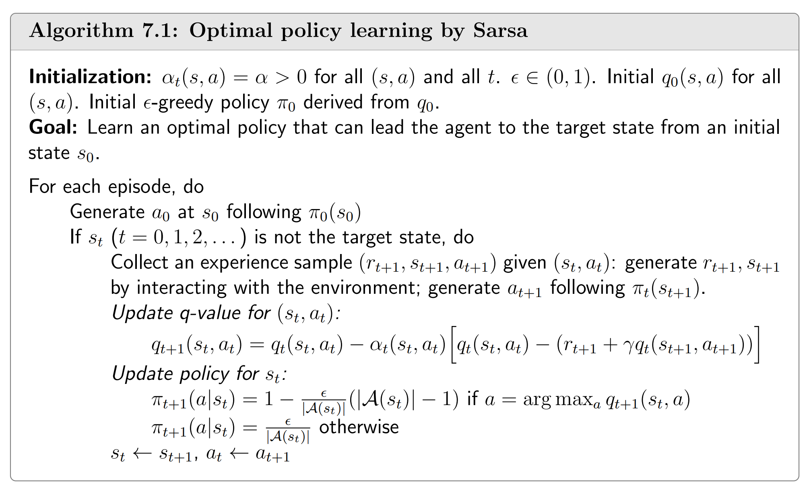
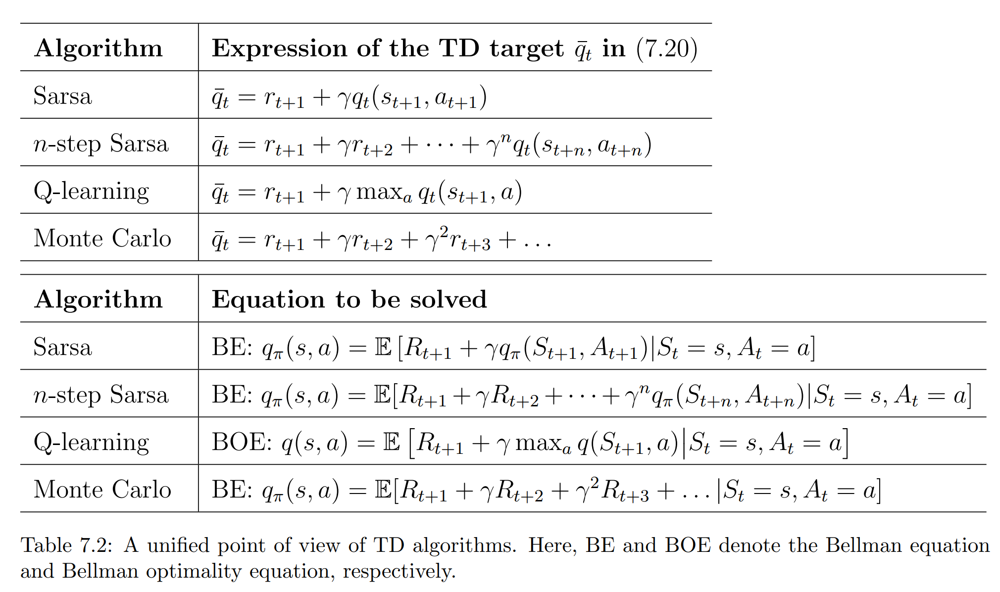

TD方法是一类利用当前估计和即时经验来实时计算当前估计的误差，从而实时更新估计值的方法。
与 MC 算法不同，TD算法是online算法。这里的Online方法指一边学习一边采集数据的方法；而Offline方法指把数据采集过程和学习过程分开的方法，先采集较大的数据集，再利用数据集学习。
Basic TD learning
该算法尝试通过解给定策略的贝尔曼方程来求得 $v_\pi(s)$，即解这个方程：
$$ v_\pi(s)=\mathbb E[R_{t+1}+\gamma v_\pi(s_{t+1}) | S_t=s] $$与MC算法用大量样本的平均值来估计 $v_\pi(s)$ 不同，TD算法是增量式的（incremental），其核心思想是用下面这个迭代过程来估计 $v_\pi(s)$：
$$ v_{t+1}(s_{t})=v_t(s_t)-\alpha_t(s)\Big ( v_t(s_t)-\big(r_{t+1}+\gamma v_t(s_{t+1})\big)\Big ) $$它的好处是每拿到一个样本都能让估计更好一点，而不用等所有样本都拿到以后再做计算。
这个迭代过程看起来很混乱，但我们要抓住其中的两个重点，一个是 TD target，另一个是 TD error.
在这个算法中有：
$$ \text{TD target: }\space r_{t+1}+\gamma v_t(s_{t+1}) $$ $$ \text{TD error: }\space v_t(s_t)-\big(r_{t+1}+\gamma v_t(s_{t+1})\big) $$这表明我们可以把迭代过程写为：
$$ v_{t+1}(s_{t})=v_t(s_t)-\alpha_t(s)\times(\text{TD error}) $$TD target是即时经验 $r_{t+1}$ 和当前估计 $v_t(s_{t+1})$ 的结合，TD error则衡量了当前估计 $v_t(s_t)$ 和这个结合的差距。我们可以看到这个算法实际上是在不断根据当前求得的 TD error 来更新估计值 $v$.
下面是TD learning和MC learning的不同之处：
| TD learning | MC learning |
|---|---|
| 增量式（incremental）：TD学习可以在接收到一个经验样本后立即更新状态/动作值。 | 非增量式（non-incremental）：MC学习必须等待一个完整的episode结束后才能进行学习。这是因为它必须计算该episode的discounted return. |
| 持续任务（continuing task）：TD学习是增量式的，它既可以处理回合式任务也可以处理持续性任务。持续性任务可能没有终止状态。 | 回合式任务（episodic task）：MC学习是非增量式的，它只能处理在有限步骤后终止的回合式任务。 |
| 自举（bootstrapping）：TD学习进行自举，因为状态/动作值的更新依赖于该值的先前估计。因此，TD学习需要对这些值进行初始猜测。 | 非自举：MC不进行自举，因为它可以直接估计状态/动作值，无需初始猜测。 |
| 低估计方差：TD的估计方差低于MC，因为它涉及的随机变量较少。例如，要估计动作值$q_π(s_t, a_t)$，Sarsa仅需要三个随机变量的样本：$R_t+1, S_t+1, A_t+1$. | 高估计方差：MC的估计方差较高，因为涉及许多随机变量。例如，要估计$q_π(s_t, a_t)$，我们需要$R_{t+1} + γR_{t+2} + γ^2R_{t+3} + ...$。假设每个回合的长度为$L$，每个状态的动作数相同为$|A|$。那么，遵循soft policy（为每个状态下的每个可能动作分配一个非零的选择概率的策略）时，可能有$|A|^L$种不同的回合。如果我们仅使用少量回合进行估计，估计方差较高就不足为奇了。 |
我们知道MC learning的收敛性由大数定律保证，而TD learning的收敛性则与之前介绍的Robbin-Monro定理密切相关。我们的目标是从下面的方程中解得 $v_\pi(s)$：
$$ v_\pi(s)=\mathbb E[R_{t+1}+\gamma v_\pi(s_{t+1}) | S_t=s] $$如果完全按照RM算法，我们得到的应该是：
$$ v_{t+1}(s_{t})=v_t(s_t)-\alpha_t(s)\Big ( v_t(s_t)-\big(r_{t+1}+\gamma v_\pi(s_{t+1})\big)\Big ) $$但在TD learning中，我们把 $v_\pi(s_{t+1})$ 换成了 $v_t(s_{t+1})$，这是因为我们要求的就是 $v_\pi$. 事实上，我们可以证明 $v$ 会收敛到 $v_\pi$，证明在此略去。
在现实中，我们不会进行完整的策略评估，而是算出了 $v_{t+1}$ 以后就直接进行策略更新（这东西真的能收敛吗……）。具体算法这里不给出，因为我们更多用的是下一篇笔记将谈到的Sarsa。Sarsa只是把 $v(s)$ 换成了 $q(s,a)$ 而已。
Sarsa算法
该算法尝试解决的数学问题也是关于给定策略的贝尔曼公式：
$$ q_\pi(s, a) = \mathbb{E} \left[ R_{t+1} + \gamma q_\pi(S_{t+1}, A_{t+1}) \mid S_t = s, A_t = a \right] $$q-value的更新过程：
$$ q_{t+1}(s_t, a_t) = q_t(s_t, a_t) - \alpha_t(s_t, a_t) \left[ q_t(s_t, a_t) - (r_{t+1} + \gamma q_t(s_{t+1}, a_{t+1})) \right] $$算法：

这策略能收敛吗？？？？？？
课上还讲了两个变体，Expected Sarsa和n-step Sarsa，我们不再详细分析。
